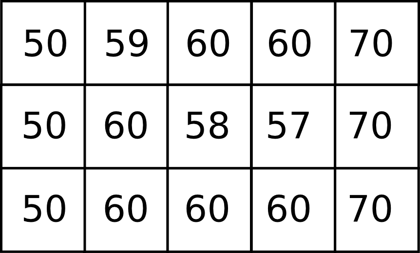

Geomorfometría y análisis del terreno
A lo largo de este capítulo estudiaremos aquellas formulaciones que tienen que ver con los Modelos Digitales de Elevaciones como capa base de análisis. En primer lugar, estudiaremos con más detalle el MDE como fuente básica de información, la forma de crearlo, sus características propias y la forma de prepararlo para el análisis. Después, veremos como extraer información a partir de él.
Para estudiar este capítulo deberás tener un buen entendimiento del álgebra de mapas, ya que sus fundamentos se aplican de forma intensa en todos los análisis que vamos a ver, y se da por supuesto que los conoces suficientemente. De igual modo, un cierto conocimiento sobre hidrología de superficie te servirá para comprender mejor la segunda parte del capítulo, aunque en este caso se dan breves explicaciones de los conceptos hidrológicos básicos.
Introducción
Si es cierto que una inmensa parte de la información que manejamos es susceptible de ser georreferenciada, y ello justifica la necesidad de los SIG como herramientas, no es menos cierto que, de los procesos que estudiamos en un SIG, la gran mayoría requieren un conocimiento exhaustivo de la superficie sobre la que se desarrollan. Puesto que las actividades humanas se asientan en su práctica totalidad sobre la superficie terrestre, estudiar cualquier fenómeno asociado a ellas sin tener en cuenta esta implica estar dejando fuera una gran cantidad de información sumamente valiosa.
Este hecho concede por sí solo importancia a este capítulo, pues todas las disciplinas hacen uso de uno u otro modo de los resultados que en él veremos. Asimismo, justifica el hecho de que el Modelo Digital de Elevaciones (MDE) sea, con toda probabilidad, la capa de mayor importancia de cuantas podemos incorporar a cualquier análisis, ya que no solo su ámbito de utilidad es amplísimo, sino que, como veremos, el número de resultados que podemos obtener de su análisis es igualmente variado y abundante. De este modo, su versatilidad es tal que en prácticamente todas las situaciones será de interés el incorporar a un proceso de análisis bien el MDE directamente o bien alguna de las múltiples capas derivadas de este.
El estudio del terreno y la parametrización de sus características es, por tanto, pieza fundamental del análisis geográfico. La disciplina encargada de llevar a cabo este análisis es la geomorfometría, la cual se define como la «ciencia del análisis cuantitativo del relieve» [Pike1995ZG][Pike2000PPG][Rasemann2004Springer]. La geomorfometría es una ciencia multidisciplinar con base en la geología, la geomorfología, la topografía, la matemática y otras muy diversas ramas de conocimiento. Esto no es de extrañar considerando lo anteriormente mencionado, ya que son muchas las disciplinas que han dedicado sus esfuerzos al análisis del relieve y el estudio de sus implicaciones sobre los distintos procesos.
Puesto que nos encontramos dentro del marco de los Sistemas de Información Geográfica, centraremos el contenido del capítulo en los aspectos de la geomorfometría que atañen a la utilización del MDE como fuente de información principal, así como en las formulaciones de análisis con base informática.
Por su especial relevancia, dedicaremos la primera parte del capítulo a tratar en profundidad los MDE como capas de datos particulares. Detallaremos tanto la creación del MDE como su preparación y tratamiento, con el objetivo de disponer de una capa de calidad acorde con las múltiples operaciones que sobre ella vamos a realizar.
Resumiendo el conjunto de análisis geomorfométricos, la aplicación de estos puede estructurarse en las siguientes etapas [Hengl2008Elsevier]:
- Toma de datos de elevación en puntos establecidos (muestreo).
- Generación de un modelo de la superficie a partir de los anteriores.
- Corrección de errores y eliminación de elementos erróneos.
- Cálculo de parámetros y elementos derivados.
- Empleo de los parámetros y elementos anteriores.
Los dos primeros puntos no son estrictamente necesarios, puesto que ya hemos visto que puede obtenerse directamente un MDE a partir de tecnologías como el LiDAR, que hace innecesario tanto la toma de datos puntuales como la interpolación en base a estos. En caso de que esta última se lleve a cabo, ya vimos en el capítulo Creacion_capas_raster las distintas técnicas existentes, aunque en este ampliaremos esa información para tratar las consideraciones específicas que deben tenerse en cuenta cuando la variable interpolada es la elevación.
El Modelo Digital de Elevaciones
El Modelo Digital de Elevaciones es la pieza clave del análisis geomorfométrico. Es el equivalente informatizado de la cartografía clásica de elevaciones tradicionalmente representada mediante curvas de nivel.
El MDE supone un enorme salto cualitativo frente a sus predecesores, ya que la utilización de un modelo numérico en lugar de uno gráfico permite una diferencia conceptual de análisis superior en este caso a la que tiene lugar con otras capas de información. El MDE se convierte así en una fuente de información de primer orden para el estudio del medio.
Conviene, antes de proseguir, aclarar algunos apartados en relación con la terminología empleada. Como en tantos otros campos, en este que tratamos ahora también existen discrepancias sobre el significado de los términos utilizados, que frecuentemente llevan a equívocos y confusiones. En relación con la cartografía digital de elevaciones, estos vienen motivadas por el empleo de dos términos distintos: Modelo Digital de Elevaciones (MDE) y Modelo Digital del Terreno (MDT).
Dentro de este texto consideraremos que un MDT es una «estructura numérica de datos que representa la distribución espacial de una variable cuantitativa y continua» [Felicisimo1994Pentalfa], mientras que un MDE es un caso particular dentro de los MDT en el cual la variable recogida es la elevación.
El concepto de MDT, como vemos, es más genérico y no ha de guardar relación alguna con el relieve, puesto que, atendiendo a la definición anterior, podemos recoger variables tales como temperatura o la humedad en un punto dado, y hacerlo mediante un MDT. Tendríamos, por ejemplo, un Modelo Digital de Temperaturas. Expresado de otro modo, el MDT no es sino una capa con información continua como por ejemplo la relativa a elevaciones, aunque pudiendo recoger cualquier otra variable con esas características.
El empleo de la palabra terreno da lugar a que, con frecuencia, MDT y MDE sean empleados erróneamente como sinónimos en el uso diario de capas de elevaciones e incluso en el ámbito más científico. En otros casos, por el contrario, sí se especifica una diferencia entre ambos conceptos, aunque esta no coincide con lo anterior. Algunos autores consideran que tanto el MDT como el MDE tienen relación con la elevación pero, mientras que el MDT recoge la elevación máxima en cada punto, incluyendo los elementos presentes tales como edificios, arboles, etc., el MDE recoge la información de la superficie sin tener esto en cuenta, en algo que podríamos denominar un Modelo Digital de la Superficie. Esta interpretación es más habitual en lengua inglesa, aunque las acepciones también varían e incluso llegan a ser completamente contrarias, asignando al MDE las características del MDT y viceversa [UKEnvironment2005].
Aunque no han de ser necesariamente recogidos en formato ráster, los MDE generalmente se entienden por definición como entidades ráster e incluso algunos autores así lo reflejan explícitamente. Para [Burrough1986Oxford], por ejemplo, un MDE es «una representación matricial regular de la variación continua del relieve en el espacio». Al igual que ya vimos en el capítulo Algebra_de_mapas para el caso del álgebra de mapas genérico, la estructural regular de una malla ráster favorece la implementación de algoritmos de forma eficiente y sumamente más sencilla. Los algoritmos de análisis geomorfométrico no son una excepción a esto, y las formulaciones para capas ráster son mucho más abundantes que las basadas en otros modelos de almacenamiento, existentes de igual modo.
Junto a la información desarrollada en el capítulo Tipos_datos acerca de los distintos modelos de representación espacial, podemos ampliar esta y ver cómo dichos modelos se adaptan de modo particular a la representación del relieve.
Los formatos vectoriales tales como la representación mediante curvas de nivel son menos adecuados, ya que, como se dijo, no son óptimos para recoger variables de tipo continuo. Aunque interesantes para representar visualmente superficies continuas, no lo son tanto para su análisis, y las formulaciones existentes a este respecto dentro del análisis geomorfométrico son pocas.
Las redes de triángulos irregulares (TIN) son una forma mejor de recoger el relieve. No obstante, la implementación de algoritmos de análisis basados es TIN es más compleja y, por ello, menos frecuente. Los paquetes de software habituales no incluyen estas, por lo que en la práctica el análisis de un MDE en formato TIN es difícil de llevar a cabo.
El formato más adecuado, tanto por sus características como por la facilidad con la que permite la implementación de algoritmos, es el formato ráster, y será en este formato en el que se basen los análisis siguientes.
Las características de una capa ráster que definen la aplicabilidad de este para un determinado análisis son sus resoluciones vertical y horizontal. En el caso del MDE, estos parámetros han sido ampliamente estudiados, así como su efecto en los resultados producidos a partir de dicho MDE. En [Gyasi1995HydroProc] y [Walker1998WWR] puede encontrarse más información al respecto
Creación y preparación del MDE
En muchas ocasiones, la información de elevaciones no se encuentra como una capa ráster. Puesto que la mayoría de las herramientas de análisis se basan en este formato y el número de formulaciones aplicables es mucho mayor, se asume que el trabajo con un MDE dentro de un SIG con el objeto de llevar a cabo un análisis pormenorizado de este requiere disponer de una capa ráster de elevaciones.
Esta capa puede obtenerse a partir de la forma original en la que se encuentren los datos de elevación, haciendo uso de las diversas metodologías tales como los métodos de interpolación ya vistos.
Tanto si generamos la capa ráster como si la obtenemos directamente ya en este formato, es habitual que esta no se encuentre en las condiciones idóneas para ser sometida a todos los análisis que veremos en este capítulo. Será necesario trabajar sobre ella y prepararla para que sirva como una fuente de información fiable a la hora de obtener nuevos descriptores del terreno.
Tanto la creación como la preparación del MDE son fases importantes que han de ser cuidadosamente llevadas a cabo.
Creación del MDE
La creación del MDE implica en la mayoría de casos la utilización de métodos de interpolación. Un caso muy habitual es la creación a partir de curvas de nivel, con cuyos valores puede obtenerse una capa continua de elevaciones. También puede obtenerse a partir de datos puntuales tomados en campo, caso que es frecuente para estudios donde es necesaria una gran precisión, y en los que la cartografía existente no es suficiente, debiendo elaborarse esta.
La naturaleza de la información que se recoge en el MDE y el análisis a efectuar posteriormente con él hacen interesantes los siguientes comentarios sobre los distintos métodos de interpolación.
- Distancia inversa. El método de distancia inversa no es adecuado para la interpolación de MDE, pues genera abundantes depresiones de carácter artificial (ver Depresiones) y elementos no naturales en el relieve.
- Kriging. Pese a ser un interpolador de calidad para el caso de datos de elevación, las superficies generadas son excesivamente suaves. Aunque la precisión del método es alta en términos cuantitativos, no refleja con precisión la configuración del relieve y sus accidentes, lo cual se hará notar en los análisis posteriores sobre dicho MDE.
Otro problema del kriging es su excesiva sensibilidad a valores extremos estadísticamente diferentes del resto, ya que producen un número elevado de elementos morfológicos erróneos [Hengl2008Elsevier], dificultando la aplicación posterior de ciertos algoritmos.
- Splines. Los splines representan una de las mejores alternativas para la creación de MDE. Frente a las restantes metodologías, autores como [Mitasova1993MathGeo] recomiendan el uso de splines para la obtención de MDE idóneos para el análisis.
- Ajuste de funciones. Como métodos globales, ajustar una función de tipo polinómico a los puntos de datos y asemejar el relieve a esta no es adecuado, ya que el relieve es altamente más complejo . El uso de funciones de grado superior y mayor complejidad, por otra parte, hace que puedan aparecer valores extremos irreales que desvirtúen por completo la superficie interpolada (ver Ajuste_de_polinomios). Aplicados como métodos locales, no obstante, veremos más adelante que este tipo de ajustes se utilizan no para la creación del MDE sino para el análisis de las propiedades de este, ajustando localmente funciones con los valores de un entorno definido de celdas.
Las anteriores son características generales de los métodos que, no obstante, pueden ser consideradas de una u otra forma según sea el terreno a interpolar. Así, si el kriging adolece de una excesiva suavidad en la forma de la superficie calculada, no será un buen método para zonas montañosas con relieves escarpados. Si conocemos, sin embargo, que el relieve de la zona a interpolar es suave y redondeado, las deficiencias del kriging no serán tales en este caso. Una vez más, el conocimiento de la variable interpolada es un elemento básico para la aplicación correcta de uno u otro método.
Es de interés reseñar que los problemas en el MDE que hacen necesaria la preparación de este antes de su análisis vienen derivados de deficiencias no cuantitativas sino especialmente cualitativas, donde las formas del relieve recogidas no se corresponden con las reales. Por ello, es importante que el MDE generado refleje correctamente la conformación de la topografía, además de disminuir el error cuantitativo, puesto que la precisión cualitativa es en muchos casos de mayor importancia para obtener con posterioridad resultados correctos [Sindayihebura2006Accuracy]. En este sentido, existen métodos particulares específicamente diseñados para la creación de MDE, cuyos resultados son más adecuados para un análisis directo y no requieren parte de la preparación que se hace necesaria al aplicar otros métodos de interpolación. Esto es así debido a que los fundamentos de esta se incorporan ya en el proceso de interpolación y cálculo de nuevos valores.
El más destacable de estos métodos es ANUDEM [Hutchinson1989JH], que toma como partida datos en forma de curvas de nivel. Además de utilizar los valores de elevación para interpolar, analiza la forma de las curvas de nivel para derivar otros resultados que sirven de apoyo. Asimismo, puede aportarse información adicional tal como la red de drenaje existente, en caso de que se disponga de ella, o los límites de barrancos u otras zonas donde el relieve no presente continuidad. Todo ello garantiza el buen comportamiento del MDE en el análisis posterior y su coherencia hidrológica.
Preparación del MDE
La preparación del MDE hace referencia al filtrado de este para eliminar las posibles deficiencias que contiene, y muy especialmente a los elementos relacionados con el análisis hidrológico. En el primer caso, se trata de eliminar información incorrecta presente en el MDE, mientras que en el segundo caso se trata de trabajar con elementos de este que dificultan la aplicación de ciertas formulaciones y algoritmos. Estos elementos no tienen que ser necesariamente erróneos
En términos generales, los objetivos que se persiguen con la preparación del MDE son:
- Eliminación de errores groseros
- Descripción más precisa del relieve
- Descripción más precisa de los procesos hidrológicos y ecológicos que tienen lugar.
La corrección de los valores del MDE enfocada a estos dos primeros objetivos incluye muchos factores distintos que han de tenerse en cuenta. Entre ellos, cabe mencionar.
- Errores incorporados por las distintas fuentes de datos o el instrumental empleado para la recogida de los mismos, así como por las metodologías empleadas en el proceso de estos (por ejemplo, las distintas técnicas de interpolación). Pueden corregirse conociendo las deficiencias de cada una de ellas, que dan información sobre el tipo de errores que pueden aparecer
- Presencia de valores discrepantes muy improbables (outliers). Estos pueden eliminarse mediante técnicas estadísticas, en función de los valores de las celdas vecinas [Felicisimo1994ISPRS]. La aplicación de métodos geoestadísticos como el kriging permite igualmente la estimación del valor esperado en una celda a partir de los valores de las circundantes.
- Presencia de zonas sin datos. Especialmente relevante en el caso de MDE procedentes de teledetección, ya que pueden existir zonas vacías por errores de captura, o bien por ser combinación de varias imágenes entre las que existen áreas no cubiertas. Estas zonas vacías pueden rellenarse mediante métodos de interpolación, siempre que estas no impliquen extrapolación y excedan de un tamaño máximo lógico.
Para una descripción más detallada de estas metodologías puede consultarse [Hengl2008Elsevier].
Además de la corrección de valores, la mayor parte de la preparación del MDE, imprescindible en muchos casos, es sin embargo de tipo hidrológico. Esta debe llevarse a cabo cuando vayamos a analizar parámetros que tengan relación con el comportamiento hidrológico de las celdas, y más concretamente todas aquellas que empleen algún algoritmo de asignación de direcciones de flujo de los que más adelante veremos.
La preparación del MDE corrige este comportamiento para solventar los dos principales problemas que se presentan a la hora de asignar direcciones de flujo: la presencia de zonas llanas y la existencia de depresiones. Ambos elementos hacen imposible el análisis hidrológico en aquellas zonas en las que aparecen, siendo necesario corregirlas previamente.
Para una mejor comprensión de las formulaciones que permiten corregir la presencia de zonas llanas o depresiones, es necesario conocer con anterioridad los algoritmos de dirección de flujo, ya que son estos los afectados por ellas. Por esta razón, veremos las soluciones a estos problemas en una sección posterior de este capítulo.
Modelos matemáticos locales del MDE
Gran parte de los análisis que vamos a realizar a partir del MDE tienen una base matemática. Conceptos tales como la pendiente o la orientación de una superficie en un punto dado pertenecen al ámbito de la geometría diferencial, y la aplicación de estos a la superficie recogida en un MDE requiere una caracterización matemática del mismo.
Sea una función que represente a nuestro Modelo Digital de Elevaciones, de la forma.
\begin{equation} \label{Eq:Caracterizacion_MDE} z=f(x,y) \end{equation}
donde $x$ e $y$ representan las coordenadas respectivas en los ejes $x$ e $y$ del plano horizontal, y $z$ la elevación en el punto definido por dichas coordenadas. De existir una función como esta y poder disponerse de una expresión explícita de ella, contendría en sí toda información del MDE. Sin embargo, parece lógico pensar que, como ya se menciono al tratar el ajuste de funciones como método de interpolación, las formas naturales del relieve no son definibles con dicha sencillez dada la complejidad de este.
Para poder dar una caracterización matemática al MDE debemos hacerlo localmente, utilizando una función distinta para cada celda. Acudiendo a los conceptos del álgebra de mapas, emplearemos una función de análisis focal que, dada una celda, toma un entorno reducido de esta y describe dicho entorno con una expresión matemática ajustada a este. La extensión limitada de la ventana de análisis hace que no sea irreal el pretender ajustar dicha función, como lo era en el caso de hacerlo para todo el MDE.
Las funciones más habituales son las de tipo cuadrático, que garantizan en mayor medida la corrección de los resultados derivados, tales como pendientes [Jones1996GISUK] o curvaturas [Schmidt2003IJGIS] (veremos en breve qué significan estos parámetros y cómo se calculan).
\begin{equation} \label{Eq:Cuadratica} f(x,y)=a x^2 y^2+b x^2 y+c x y^2+d x^2+e y^2+f x y+g x+h y+k \end{equation}
[Evans1972Harper] propone el caso particular
\begin{equation} \label{Eq:Evans} z = \frac{{r x^2 }}{2} + s x y + \frac{{t y^2 }}{2} + p x + q y + z_0 \end{equation}
Con seis parámetros que calcular, la ventana habitual $3\times3$, con nueve valores, es suficiente para llevar a cabo un ajuste por mínimos cuadrados. Empleando la notación introducida en Funciones_focales para dicha ventana, los valores de los parámetros quedan determinados de la siguiente forma:
\begin{eqnarray} \label{Eq:Parametros_Evans} p &=& \frac{{z_3 + z_6 + z_9 - z_1 - z_4 - z_7 }}{{6 \Delta s}} \\ q &=& \frac{{z_1 + z_2 + z_3 - z_7 - z_8 - z_9 }}{{6 \Delta s}} \nonumber \\ r &=& \frac{{z_1 + z_3 + z_4 + z_6 + z_7 + z_9 - 2(z_2 + z_5 + z_8 )}}{{3 {\Delta s}^2 }} \nonumber \\ s &=& \frac{{ - z_1 + z_3 + z_7 - z_9 }}{{4 {\Delta s}^2 }} \nonumber \\ t &=& \frac{{z_1 + z_2 + z_3 + z_7 + z_8 + z_9 - 2(z_4 + z_5 + z_6 )}}{{3 {\Delta s}^2 }} \nonumber \\ z_0 &=& \frac{{5 z_5 + 2 (z_2 + z_4 + z_6 + z_8 ) - (z_1 + z_3 + z_7 + z_9 )}}{9} \nonumber \end{eqnarray}
siendo ${\Delta s}$ el tamaño de celda.
Mientras que la superficie definida por esta función no ha de pasar necesariamente por ninguna de las celdas, [Zevenbergen1987ESPL] propone utilizar la expresión completa de \ref{Eq:Cuadratica}, que expresaremos como sigue para que los cálculos posteriores resulten más sencillos:
\begin{equation} \label{Eq:Zevenbergen} z = A x^2 y^2 + B x^2 y + C x y^2 + \frac{{r x^2 }}{2} + s x y + \frac{{t y^2 }}{2} + p x + q y + D \end{equation}
Esta función, ajustada mediante polinomios de Lagrange, sí garantiza que la superficie pase exactamente por los puntos de la ventana de análisis.
En este caso, los valores de los coeficientes son los siguientes:
\begin{eqnarray} \label{Eq:Parametros_Zevenbergen} p &=& \frac{{z_6 - z_4 }}{{2 \Delta s}} \\ q &=& \frac{{z_2 - z_8 }}{{2 \Delta s}} \nonumber \\ r &=& \frac{{z_4 + z_6 - 2 \cdot z_5 }}{{{\Delta s}^2 }} \nonumber \\ s &=& \frac{{ - z_1 + z_3 + z_7 - z_9 }}{{4 {\Delta s}^2 }} \nonumber \\ t &=& \frac{{z_2 + z_8 - 2 z_5 }}{{{\Delta s}^2 }} \nonumber \\ A &=& \frac{{(z_1 + z_3 + z_7 + z_9 ) - 2 (z_2 + z_4 + z_6 + z_8 ) + 4 \cdot z_5 }}{{4 {\Delta s}^4 }} \nonumber \\ B &=& \frac{{(z_1 + z_3 - z_7 - z_9 ) - 2 (z_2 - z_8 )}}{{4 {\Delta s}^3 }} \nonumber \\ C &=& \frac{{( - z_1 + z_3 - z_7 + z_9 ) - 2 (z_6 - z_4 )}}{{4 {\Delta s}^3 }} \nonumber \\ D &=& z_5 \nonumber \end{eqnarray}
Junto a las anteriores, probablemente las más habituales, encontramos otras como [Shary1995MG], idéntica a la de [Evans1972Harper] salvo por el hecho de que obliga a la función a pasar por la celda central, o [Horn1981IEEE], así como funciones de orden superior o bien ajustes de planos en lugar de superficies cuadráticas [Beasley1982EPA]. Igualmente, puede generalizarse lo anterior al empleo de polinomios de grado $n$ [Wood1996PhD].
Independientemente del método empleado, disponemos de una caracterización matemática del relieve a nivel local, lo cual nos permite ya aplicar las herramientas matemáticas con las que obtener valores derivados.
Análisis morfométrico
El análisis morfométrico del MDE estudia el relieve y la orografía de la superficie por este definida, caracterizándolo a través de parámetros adicionales. Recurriendo una vez más a los conceptos del álgebra de mapas, estos parámetros se basan en su gran mayoría en un análisis focal. Este análisis emplea la caracterización matemática que vimos en el punto anterior, así como formulaciones estadísticas sencillas. En función de ello distinguimos dos grupos principales:
- Medidas geométricas
- Medidas estadísticas
Puesto que la mayoría de análisis son de tipo focal, se necesita definir una ventana de análisis. El tamaño de esta ventana depende del tipo de medida a calcular. En el caso de medidas estadísticas, esta puede escogerse libremente, así como su forma. En el caso de las medidas geométricas, estas requieren de un modelo matemático del terreno, por lo que la ventana de análisis viene condicionada al modelo escogido. En realidad, una vez establecida la función que define localmente la superficie del MDE, hacemos uso directo de su expresión, motivo por el cual, según sea el modelo, se usarán unos u otros valores de los pertenecientes a la ventana de análisis.
Medidas geométricas
Las medidas geométricas derivan de la caracterización matemática local del relieve, sobre la cual se aplican conceptos fundamentales de geometría diferencial. Estas medidas describen las propiedades geométricas de la porción de relieve contenida en la ventana de análisis.
Los conceptos subyacentes son los mismos para todos los modelos del terreno, aunque, lógicamente, producen resultados distintos.
Existen formulaciones no basadas en un análisis matemático del terreno [Travis1975USDA], aunque nos centraremos en aquellas con una base matemática, por su mayor idoneidad. Estas formulaciones que no hacen uso de la caracterización matemática local del terreno permiten obtener valores de pendiente y orientación, pero no de otros parámetros tales como curvaturas.
Medidas basadas en derivadas de primer grado
Los parámetros geométricos más básicos parten del estudio de las derivadas parciales de primer orden de la superficie, y se obtienen a partir del gradiente de la superficie. El gradiente es un concepto básico del cálculo vectorial y se expresa en función de las antedichas primeras derivadas parciales, según
\begin{equation} \label{Eq:Gradiente} \nabla \overline{\mathbf{Z}}=\left(\frac{\partial z}{\partial x},\frac{\partial z}{\partial y}\right) \end{equation}
Dado un campo escalar tal como el representado por el MDE, el gradiente es un campo vectorial orientado en la dirección en la que el campo escalar experimenta una mayor variación.
Las dos propiedades principales que podemos obtener del gradiente son dos: su longitud o módulo y su dirección. Estas propiedades, considerando la interpretación geomorfométrica que le damos por calcularse a partir del MDE, constituyen dos de los parámetros más importantes que pueden extraerse de este: la pendiente y la orientación.
La pendiente refleja la variación máxima de la elevación y se define en función del gradiente como
\begin{equation} \label{Eq:Pendiente} s=\arctan(|\nabla \overline{\mathbf{Z}}|) \end{equation}
Este valor representa el ángulo entre el plano horizontal y el tangencial a la superficie en el punto considerado. Este último queda definido por el gradiente, que es normal al mismo. El horizontal es, a su vez, normal a la curva de nivel que pasa por el punto.
La pendiente obtenida de la expresión anterior viene expresada en unidades angulares tales como radianes o grados, aunque es habitual hacerlo en porcentaje. Para ello, utilizamos la expresión
\begin{equation} \label{Eq:Pendiente2} s=\tan(s) \cdot 100 \end{equation}
Si utilizamos el modelo matemático de [Evans1972Harper], derivando la expresión dada obtenemos:
\begin{equation} \label{Eq:GradienteEvansP} \frac{\partial z}{\partial x} \approx\frac{\partial (\frac{{r x^2 }}{2} + s x y + \frac{{t y^2 }}{2} + p x + q y + z_0)}{\partial x} =rx + sy + p \end{equation} \begin{equation} \label{Eq:GradienteEvansQ} \frac{\partial z}{\partial y} \approx\frac{\partial (\frac{{r x^2 }}{2} + s x y + \frac{{t y^2 }}{2} + p x + q y + z_0)}{\partial y} = ty + sx + q \end{equation}
El valor que buscamos es el de la celda central, que representa el origen de coordenadas. Por tanto, $x=y=0$, y según \ref{Eq:Parametros_Evans} tenemos que
\begin{equation} \label{Eq:GradienteEvansP00} p=\frac{\partial z}{\partial x}=\frac{z_3+z_6+z_9-z_1-z_4-z_7}{6 \cdot \Delta s} \end{equation} \begin{equation} \label{Eq:GradienteEvansQ00} q=\frac{\partial z}{\partial y}=\frac{z_1+z_2+z_3-z_7-z_8-z_9}{6 \cdot \Delta s} \end{equation}
Con estos valores ya tenemos el vector gradiente, y aplicando la ecuación \ref{Eq:Pendiente} obtenemos el valor de la pendiente en la celda.
\begin{equation} \label{Eq:PendienteEvans} s=\arctan(\sqrt{p^2+q^2}) \end{equation}
Si empeamos en su lugar el modelo introducido en \ref{Eq:Zevenbergen}, derivando y haciendo $x=y=0$, se obtiene también que
\begin{equation} \label{Eq:Notacion_derivadas} p=\frac{\partial z}{\partial x} \ ; \ q=\frac{\partial z}{\partial y} \end{equation}
Y según \ref{Eq:Parametros_Zevenbergen}
\begin{equation} \frac{\partial z}{\partial x} = \frac{{z_6 - z_4 }}{{2 \Delta s}} \\ \end{equation} \begin{equation} \frac{\partial z}{\partial y} = \frac{{z_2 - z_8 }}{{2 \Delta s}} \\ \end{equation}
Como ejemplo, el mapa de pendientes resultante de utilizar esta última formulación puede verse en la figura \ref{Fig:Mapa_pendiente}.

Podemos expresar ambas formulaciones como el resultado de convoluciones (ver Funciones_focales), mediante un núcleo. Por ejemplo, las parciales según la metodología de [Evans1972Harper] se corresponden con los núcleos siguientes:

Como ya sabemos, la estructura ráster del MDE es similar a la de una imagen digital. Esto hace que no solo sea sencillo combinar el MDE con imágenes aéreas o satelitales, sino que también en las técnicas y algoritmos existe una notable similitud. En particular, veremos más adelante en el capítulo dedicado al análisis de imágenes que los núcleos anteriores se conocen como núcleos de Prewitt y son frecuentemente utilizado para la detección de bordes.
Muy relacionado con la pendiente, encontramos otro parámetro muy sencillo: la superficie real de una celda. Si tenemos una capa con un tamaño de celda $\Delta s$, el área ocupada por la misma será $A=(\Delta s)^2$. No obstante, se trata de un área planimétrica, ya que en ningún momento consideramos que la celda tiene inclinación. Este área no se corresponde con, por ejemplo, el área real que se encuentra disponible para los seres vivos que habitan en esa celda, pues esta debería considerar la influencia de la pendiente.
La manera más sencilla de calcular el área real de una celda es empleando la siguiente fórmula [Berry1996Wiley]:
\begin{equation} A' = \frac{A}{\cos ({s})} \end{equation}
La simplicidad de la fórmula, sin embargo, hace que, por regla general, el área quede sobreestimada [Hobson1972Harper], al contrario que en el caso de utilizar directamente el área planimétrica. [Jenness2004Wild] propone como alternativa el utilizar el conjunto de triángulos tridimensionales que se establecen entre la celda central y cada una de las adyacentes, y sumar las áreas de todos ellos. De este modo, se obtiene una aproximación más realista.
Junto con la pendiente, la orientación es el otro parámetro básico que calculamos a partir del gradiente. Esta queda definido como [Gallant1996CG]:
\begin{equation} \label{Eq:Orientacion} a=180 - \arctan \left( \frac{q}{p} \right) + 90 \frac{p}{|p|} \end{equation}
siendo $p$ y $q$ las derivadas parciales en las dos direcciones $x$ e $y$, según la notación que venimos empleando.
El resultado viene expresado en grados sexagesimales. Se considera por convención que el Norte marca la orientación cero, aumentando los valores en sentido horario.
La formula anterior no se encuentra definida en aquellas celdas para las cuales $\partial z/\partial y=0$. [Shary2002Geoderma] propone utilizar en su lugar la siguiente fórmula:
\begin{equation} \label{Eq:Orientacion2} \begin{split} a = &- 90 \cdot \left[1- \mathrm{sign }(q)\right] \cdot \left[1 -|\mathrm{sign }(p)|\right] \\ &+ 180 \cdot \left[1+\mathrm{sign }(p)\right] - \frac{180}{\pi} \cdot \mathrm{sign }(p) \\ & \cdot \arccos \frac{-q}{\sqrt{p^2+q^2}} \end{split} \end{equation}
siendo $\mathrm{sign}(x)$ la función definida por
\begin{equation} \mathrm{sign}(x) = \left \{ \begin{array}{ll} 1 & \textrm{ si } x > 0 \\ 0 & \textrm{ si } x = 0 \\ -1 & \textrm{ si } x < 0 \\ \end{array}\right. \end{equation}
En este caso, la orientación no esta definida cuando la pendiente es nula.
El mapa de orientaciones para la zona del juego de datos de referencia se muestra en la figura \ref{Fig:Mapa_orientacion}.

Es de reseñar que la orientación es un parámetro circular, ya que $a$ y $a+360${°} indican la misma dirección. Por esta razón, debe tenerse cuidado al realizar análisis estadísticos sobre los valores de orientación. Una posible solución que elimina este hecho es trabajar con las proyecciones $\cos(a)$ y $\sin(a)$ [King1999Geoderma] (ver Estadisticas_lineas). También a la hora de crear una representación gráfica de un mapa de orientaciones debe tenerse en cuenta la naturaleza circular del parámetros. Nótese como en la figura \ref{Fig:Mapa_orientacion} la escala de colores también es circular, de tal modo que el valor máximo (360) tiene asociado el mismo color que el mínimo (0), ya que en realidad representan una misma orientación. Tanto la orientación como pendiente pueden representarse de modo simultaneo no como una capa nueva de valores, sino mediante elementos vectoriales (líneas) que representen el gradiente, las cuales pueden acompañar a la propia capa de elevaciones a partir de la cual se calculan (Figura \ref{Fig:Representacion_gradiente}). Es de interés reseñar que, aunque la pendiente y la elevación son habitualmente aplicadas a una capa de elevaciones como todos los restantes parámetros que vemos en este capítulo, no ha de limitarse su aplicación a estas. Para cualquier otra variable de la cual queramos ver cómo varía en el espacio, ambos parámetros son perfectamente aplicables.

Como veremos más en detalle en las próximas secciones, la orientación tiene relación directa con el comportamiento de los flujos sobre el terreno y sirve por tanto para el análisis hidrológico. Los análisis que veremos son de tipo regional, aunque la orientación puede usarse también en análisis focales para definir parámetros relacionados con el comportamiento hidrológico, tales como el índice de convergencia [Koethe1996SARA]. Una representación de este índice se encuentra en la figura \ref{Fig:Indice_convergencia}.

Otro de los usos habituales de los MDE es el relativo a la insolación. Tradicionalmente, la propia orientación se ha utilizado para evaluar si una zona se encuentra situada en solana o en umbría. Con la mayor potencia que el cálculo basado en un MDE nos brinda, podemos obtener resultados más precisos.
Una primera aproximación mediante un modelo sencillo se obtiene combinando los valores de orientación y pendiente en los denominados relieves sombreados. Estos mapas intentan reflejar la topografía del MDE de forma más realista, constituyendo además representaciones muy intuitivas. Por esta razón, se han empleado para resaltar otros mapas y enriquecerlos visualmente [Horn1981IEEE], tal y como puede verse en la figura \ref{Fig:Relieve_sombreado}. Empleando transparencias, puede reflejarse en una única imagen la información de una capa ráster y el relieve subyacente.

Para una posición dada del Sol definida por su azimut $\phi$ y su elevación sobre el horizonte $\theta$, la insolación sobre una celda de pendiente $s$ y orientación $a$ viene expresada por la ecuación [Shary2005GFDQ]:
\begin{equation} \label{Eq:Insolacion} F = \frac{100\tan(s)}{\sqrt{1+\tan^2(s)}} \left [ \frac{\sin(\theta)}{\tan(s)}-\cos(\theta) \sin(\phi-a) \right ] \end{equation}
Los valores se sitúan en el rango 0--100. La capa resultante puede emplearse no solo para mejorar visualmente otras, sino, por ejemplo, para corregir el efecto del relieve en imágenes de satélite. [Riano2003IEEE] [Felicisimo1994Pentalfa].
El modelo de insolación anterior es muy simple y puede mejorarse notablemente. Por una parte, para reflejar realmente la insolación debemos considerar las sombras que pueden proyectar otros elementos del relieve situados entorno a la celda considerada. Es decir, el estudio riguroso de la insolación no puede ser un análisis focal. Por otra parte, los valores sin unidades en el rango 1--100 que son válidos para la mejora visual de otras capas, serían mucho más útiles para otras aplicaciones si contuvieran información en unidades reales de energía radiante. Y por último, esta energía radiante debería poder expresarse no soló instantánea para una posición dada del Sol, sino acumulada a lo largo de un periodo de tiempo tal como un día, una estación o un año completo. De este modo, sería mucho más útil para, por ejemplo, desarrollar modelos de desarrollo de especies vegetales o animales, que guardan una relación directa con la energía solar recibida.
Respecto al estudio de la insolación no como un parámetro local, sino teniendo en cuenta las sombras causadas por el relieve circundante, se aplican análisis de visibilidad para ver si existe conexión visual entre el Sol y una celda dada o, por el contrario, el relieve bloquea la línea de visión. En Visibilidad se detallará lo necesario para llevar a cabo este análisis.
En la figura \ref{Fig:Visibilidad_insolacion} puede verse esto gráficamente.

Para analizar la insolación a lo largo de un periodo dado, basta dividir este en intervalos y estudiar la posición del Sol en cada uno.de ellos. Los ángulos $\phi$ y $\theta$ se obtienen en cada instante a partir de modelos astronómicos sencillos. En [Wilson2000Wiley] se encuentran detalladas las expresiones correspondientes. Del análisis de todos esos intervalos obtenemos el tiempo de insolación total como suma del de todos los intervalos en los que el Sol es visible desde la celda, así como un valor total de insolación como suma de las energías recibidas en ellos.
Para estimar dicha energía correspondiente a un intervalo, estudiamos las pérdidas de energía debidas a la transmisión desde el Sol a la Tierra, y las correspondientes al relieve.
Comenzando partir de la magnitud $E$ de la misma recibida en el exterior de la atmósfera, se puede calcular la recibida por una superficie plana — es decir, horizontal — situada a una altura $h$ sobre el nivel del mar, según los pasos siguientes.
Se tiene que \begin{equation} E=E_0(1+0,034\cos(360d/365)) \end{equation}
donde $E_0$ es la conocida constante solar de valor $1367 \mathrm{W \; m^{-2}}$ y $d$ el número de día del año.
El paso por la atmósfera reduce el valor de $E$ según
\begin{equation} E'=E \tau^{M_h} \end{equation}
donde $\tau$ es la transmisividad del aire, generalmente de valor $\tau=0,6$, y $M_h$ la masa del aire, la cual se evalúa de acuerdo con la expresión
\begin{equation} M_h=M_0 C_p \end{equation}
siendo
\begin{eqnarray} M_0=\sqrt{1229+(614\sin\alpha^2)-614 \sin\alpha}\\ C_p=\left(\frac{228-0,0065h}{288}\right)^{5,256} \end{eqnarray}
Por último, el relieve de la celda modifica la energía recibida según
\begin{equation} E''=E' \cos\alpha \end{equation}
El valor de $\cos\alpha$ se calcula a partir de las orientaciones y pendientes tanto del Sol como de la celda, haciendo uso de la expresión
\begin{equation} \cos \alpha=\cos\theta\sin s +\cos(\phi_s - a) \sin \theta\cos s \end{equation}
No obstante, la introducción de factores como la masa de aire añaden una cierta subjetividad al modelo al ser datos estimados a su vez a partir de otros parámetros, pudiendo restar en cierta medida aplicabilidad a este planteamiento, según casos. Junto a esto, otra serie factores tales como el albedo debido a la nubosidad no son considerados en el anterior modelo, y serían difíciles de integrar. Y por último, la radiación difusa debe considerarse, pues su aporte es relevante [Hengl2008Elsevier]
[Felicisimo1994Pentalfa] propone reflejar las diferencias que existen entre cada celda mediante la expresión de las energías de modo relativo tomando una referencia válida para ello. En particular, es de interés dar las energías como porcentajes de la que sería recibida por una superficie horizontal, pues resulta sencillo y altamente operativo a efectos de calcular una malla de insolación como la que buscamos. Se define así el concepto de índice de radiación, según la expresión
\begin{equation} I_{\mathrm{rad}}=\sum^n_{i=1}\frac{\cos \sigma}{\cos(\pi/2-\gamma_s)} \end{equation}
Aplicando este concepto al cálculo de la energía en una celda dada, esta puede obtenerse para dicha celda, y sobre un intervalo de tiempo dividido en $n$ periodos, mediante la expresión
\begin{equation} E=E_0\sum^n_{i=1}\frac{\cos \sigma}{\cos(\pi/2-\gamma_s)} \end{equation}
$E_0$ es la energía recibida por una superficie horizontal.
Esta aproximación es sumamente útil si se dispone de datos puntuales procedentes de piranómetro, ya que, tomando dichos datos como referencia —esto es, conociendo el valor exacto de $E_0$—, se podrían calcular las restantes celdas de la malla aplicando la anterior relación.
Medidas basadas en derivadas de segundo grado
Las medidas geométricas basadas en derivadas de segundo grado aportan información sobre la concavidad o convexidad de la superficie en un punto dado. El parámetro que expresa esa información se denomina curvatura.
Al contrario que sucedía con la pendiente o la orientación, no existe una única curvatura, sino un número infinito de ellas. Para definir una curvatura particular necesitamos no solo el punto donde calcularla, sino también un plano que corte a la superficie en el mismo. Este plano ha de contener al vector normal a la superficie, y la intersección de dicho plano con esta da lugar a lo que se denomina una sección normal (Figura \ref{Fig:Seccion_normal}), sobre la cual se estudia la curvatura. La curvatura de la curva plana que representa la sección normal es el inverso del radio del circulo que se ajusta a la curva en el punto dado (Figura \ref{Fig:Concepto_curvatura}). Por tanto, tiene dimensiones [L$^{-1}$].

Matemáticamente, la curvatura $k$ de la curva $z(x)$ viene dada por:
\begin{equation} \label{Eq:Curvatura_curva} k=\frac{\frac{\mathrm{d}^2 z}{\mathrm{d}z^2}}{\left [ 1 + \left ( \frac{\mathrm{d}y}{\mathrm{d}x} \right )^2 \right ]^{1.5}} \end{equation}
De entre los planos que pueden tomarse, algunos aportan más información que otros. Los planos normales a la superficie que son paralelo y normal a la curva de nivel (mutuamente ortogonales) resultan de especial interés. Estos definen, respectivamente, las curvaturas denominadas horizontal y vertical.

Junto con la notación introducida en \ref{Eq:Notacion_derivadas}, utilizaremos la siguiente para simplificar las expresiones:
\begin{eqnarray} \label{Eq:Notacion_derivadas2} r=\frac{\partial^2 z}{\partial x^2}; \qquad s=\frac{\partial^2 z}{\partial x \partial y}; \qquad t=\frac{\partial^2 z}{\partial y^2}; \end{eqnarray}
Derivando tanto la fórmula de [Evans1972Harper] como la de [Zevenbergen1987ESPL], y dadas la expresiones escogidas para estas, se tiene que las derivadas parciales $r$, $s$ y $t$ coinciden respectivamente con los coeficiente $r$, $s$ y $t$ de aquellas, calculados en la sección Modelos_MDE.
Empleando la notación de \ref{Eq:Notacion_derivadas2}, la fórmula de la curvatura vertical es la siguiente [Evans1972Harper][Krcho1973ActaGeo]:
\begin{equation} \label{Eq:Curvatura_vertical} {kv}=\frac{-p^2 \cdot r+2 p q r s+q^2 t}{(p^2+q^2) \sqrt{(1+p^2+q^2)^3}} \end{equation}
Por convenio, las zonas convexas tienen curvatura negativa y las cóncavas curvatura positiva.
En el caso de valores convexos de curvatura vertical, estos indican un aumento en la pendiente según se sigue la linea de máxima inclinación. Puesto que esta es la línea que marca la dirección del agua al fluir, las zonas con curvatura vertical convexa se corresponden con aquellas en las que el agua experimentaré una aceleración. Por el contrario, si esta curvatura es cóncava, el agua tenderá a decelerarse. Las zonas con curvatura vertical cóncava son zonas con tendencia a acumular agua.,
Para la curvatura horizontal, se tiene [Krcho1983Geo]:
\begin{equation} \label{Eq:Curvatura_horizontal} kh=-\frac{q^2 r- p q s+p^2 t}{(p^2+q^2)\sqrt{1+p^2+q^2}} \end{equation}
La interpretación del significado de esta curvatura podemos realizarla de modo similar al caso anterior, en esta ocasión considerando que la sección normal es perpendicular a la linea de máxima pendiente. Una curvatura horizontal convexa representa una zona en la que el flujo tiende a dispersarse, mientras que si es cóncava el flujo tiende a concentrarse, ya que las lineas de flujo convergen.
Junto a estas dos curvaturas más habituales y utilizadas, existen otras también estudiadas en la literatura, si bien con menos aplicación directa por el momento. [Shary2005GFDQ] propone un sistema de 12 curvaturas básicas, incluyendo las anteriores:
- Curvatura horizontal
- Curvatura vertical
- Curvatura media
- Curvatura máxima
- Curvatura mínima
- Curvatura de anesfericidad
- Diferencia de curvatura
- Exceso de curvatura vertical
- Exceso de curvatura horizontal
- Curvatura de acumulación
- Curvatura total acumulada
- Curvatura total anular
- Rotor (curvatura de las lineas de flujo)
A cada uno de estos parámetros puede asignársele una interpretación geomorfométrica, aunque el uso práctico no es frecuente, salvo en el caso de las curvaturas horizontal y vertical.
De igual modo, el estudio de los parámetros geométricos podría continuarse con las derivadas de tercer grado, aunque su aplicación práctica aún no se encuentra bien definida. Es interesante hacer ver, no obstante, que las derivadas sucesivas son más sensibles a los errores del MDE y propagan esta sensibilidad a los resultados obtenidos en base a ellas [Schmidt2003IJGIS].
Aunque hemos visto una interpretación de las curvaturas relacionada con los flujos de superficie, estas aportan información útil sobre otros aspectos, tales como la evolución del suelo, pues esta se encuentra directamente relacionada con el comportamiento del agua. También pueden ser útiles, entre otros, para el estudio de las comunidades animales, ya que pueden entenderse las zonas cóncavas como zonas protegidas y las convexas como zonas expuestas, lo cual tiene una indudable repercusión en el desarrollo de dichas comunidades.
Medidas estadísticas
Las medidas estadísticas se basan en la aplicación tanto de conceptos estadísticos básicos como otros más específicos definidos específicamente para su aplicación sobre un MDE. Son también en su mayoría elementos derivados de un análisis focal, pudiendo en este caso emplear ventanas de análisis de formas y tamaños diversos, al no estar condicionados por el uso de ningún modelo matemático del relieve.
Los parámetros más inmediatos a calcular son los cuatro primeros momentos de la distribución de valores en la ventana de análisis, es decir, la media, la desviación típica, el coeficiente de asimetría y el de kurtosis.
La media es un parámetro genérico que se puede utilizar como un operador focal sobre cualquier capa de datos, y ya la hemos visto en otros apartados anteriores. Tiene, como ya hemos mencionado (Funciones_focales) un efecto de suavizar la transición entre los valores de las celdas, produciendo un desenfoque en el caso de aplicarlo sobre imágenes. En el caso del MDT, este suavizado elimina la depresiones compuestas por una única celda, aunque ya hemos visto anteriormente que existen métodos más elaborados, más idóneos para esta tarea.
En algunos casos existe una marcada correlación entre un parámetro estadístico y uno geométrico de los vistos en el punto anterior. Por ejemplo, la desviación típica esta fuertemente correlacionada con la pendiente.
Otra medida de interés es el rango de valores, esto es, la diferencia entre la elevación máxima y la mínima dentro de la ventana de análisis.
La combinación de parámetros estadísticos con parámetros geométricos puede aportar igualmente información de interés. El calculo de la media aplicada no a la elevación sino a parámetros tales como pendiente o curvatura son ejemplos de lo anterior.
Un parámetro más especifico es la rugosidad. Como indica [Felicisimo1994Pentalfa], no existe un forma unánimemente aceptada de calcular la rugosidad, ya que los distintos autores aportan soluciones muy diversas. El concepto de rugosidad, no obstante, es sencillo: expresa lo escarpado del relieve, caracterizando la complejidad de este. Terrenos más ondulados o escarpados llevan asociados valores mayores de rugosidad.
La forma más simple de calcular la rugosidad es empleando la desviación típica de las celdas dentro de la ventana de análisis, un parámetro ya comentado. Valores altos de este denotan una superficie irregular, mientras que valores bajos indican un relieve suave. Este método, no obstante, no se comporta correctamente en todas las situaciones, ya que, por ejemplo, asigna un valor alto a una ventana de análisis que engloba una superficie suave —lisa— pero en pendiente. Una solución para solventar esto es ajustar un plano a los valores de la ventana de análisis y calcular la desviación típica de los valores ajustados.
Un enfoque distinto es el propuesto por [Hobson1972Harper], incluyendo elementos de cálculo vectorial con su factor de rugosidad:
\begin{equation} \label{Eq:chA06:RoughnessHobson} R = \frac{{\sqrt {\left( {\sum\limits_{i = 1}^n {{\rm X}_i } } \right)^2 + \left( {\sum\limits_{i = 1}^n {{\rm Y}_i } } \right)^2 + \left( {\sum\limits_{i = 1}^n {{\rm Z}_i } } \right)^2 } }}{n} \end{equation}
siendo $n$ el número de celdas en la ventana de análisis y ${\rm X}_i, {\rm Y}_i$ y ${\rm Z}_i$ las componentes del vector unitario normal a la superficie en cada una de dichas celdas. Estas pueden calcularse a partir de la pendiente y la orientación según las expresiones:
\begin{equation} \label{Eq:RugosidadHobson1} {\rm X}_i=\sin (s) \cdot \cos (a) \end{equation}
\begin{equation} \label{Eq:RugosidadHobson2} {\rm Y}_i=\sin (s) \cdot \sin (a) \end{equation}
\begin{equation} \label{Eq:RugosidadHobson3} {\rm Z}_i=\cos (s) \end{equation}
Acerca de la rugosidad, y puesto que representa la complejidad del relieve, debe mencionarse la influencia que tiene en la creación del MDE. Relieves rugosos implican una mayor complejidad y son más difíciles de registrar de forma precisa, con lo que las exactitud de las técnicas de interpolación al generar un MDE depende directamente de la rugosidad del relieve a interpolar.
Análisis hidrológico
Uno de los fenómenos principales que tiene lugar sobre la superficie terrestre es el movimiento de flujos, tanto líquidos como sólidos. El MDE es una herramienta de primer orden para un análisis exhaustivo de estos fenómenos hidrológicos.
Veíamos en el apartado Preparacion_MDE cómo resultaba necesario corregir el MDE para eliminar las depresiones de origen artificial y así poder asignar direcciones de flujo en todas las celdas. Trabajando sobre la base de ese MDE corregido estudiaremos a continuación las diversas formas de asignar dichas direcciones y, posteriormente, cómo emplearlas para el cálculo de nuevos parámetros.
La asignación de direcciones de flujo se lleva a cabo mediante un análisis de tipo focal, al igual que los parámetros morfométricos que hemos visto hasta el momento. Esas direcciones, no obstante, implican una conectividad entre las celdas del MDE, y esta conectividad la emplearemos para definir regiones de celdas hidrológicamente relacionadas entre sí y realizar un análisis regional.
Direcciones de flujo
Las direcciones de flujo definen el comportamiento hidrológico de cada celda como unidad aislada. Este comportamiento viene condicionado directamente por las celdas circundantes, ya que es la relación entre las alturas de cada una ellas con la celda central la que indica la dirección de flujo. Dicha dirección está fundamentada en el principio básico y evidente de que el agua en su recorrido se mueve siempre hacia el menor potencial posible, esto es, hacia la dirección de máxima pendiente.
El modelo más sencillo de asignación de direcciones de flujo es el denominado D8 [Callaghan1984CVGIP], acrónimo derivado de su denominación en lengua inglesa Deterministic 8. Esta formulación es la implementada en la gran mayoría de SIG con capacidades de análisis hidrológico, debido principalmente a su sencillez operativa y facilidad de comprensión.
Los fundamentos teóricos de esta metodología son intuitivos e inmediatos. Dada una celda problema, el flujo puede abandonar esta únicamente en ocho direcciones posibles, esto es, las ocho que resultan de unir el centro de la celda inicial con los de las las ocho circundantes en la ventana de análisis $3 \times 3$. El ángulo de desplazamiento del flujo queda así discretizado en intervalos de $45° (360°/8)$, circunstancia que se erige como principal inconveniente del método al restringir la variedad de situaciones reales a tan solo $8$ posibles.
El proceso de cálculo de la dirección de flujo es sencillo, y requiere únicamente el cálculo de una pendiente media entre la celda central y las 8 circundantes, la cual se evalúa mediante la expresión
\begin{equation} \label{Eq:Pendiente_D8} \gamma=\frac{z_5-z_i}{l}; \qquad z = 1, … , 9 ; \qquad i \neq 5 \end{equation}
donde $l$ representa la distancia entre los centros de las celdas entre las que se calcula la pendiente. No se emplea aquí directamente la variable $\Delta s$ de tamaño de celda, ya que la distancia a aplicar no es igual en las celdas situadas en la vertical o en la horizontal de la celda central ($l = \Delta s$), que en las celdas situadas en diagonal a la misma ($l = \sqrt{2}\Delta s$). La dirección de flujo viene definida por la celda que marca la mayor de las pendientes.
La principal ventaja del método, su simplicidad, es también su principal defecto. La discretización de las direcciones en múltiplos de 45° hace que flujos que presenten rutas ciertamente distintas (con diferencias en orientación tan importantes como esos mismos 45°) puedan quedar englobados dentro de un misma dirección, ya que la dirección real resulta truncada para encajar dentro de uno de los intervalos.
La aparición de segmentos rectilíneos paralelos en zonas llanas (Figura \ref{Fig:Lineas_paralelas_D8}) o la acumulación de errores en pendientes monótonas (\ref{Fig:Acumulacion_error_D8}), son, entre otras, algunas de las consecuencias indeseadas de lo anterior.


Asimismo, existe una imposibilidad para modelizar los procesos de divergencia del flujo, al contemplarse tan solo el caso en que este vierte sobre una única de sus celdas circundantes. Es decir, que el flujo queda modelizado de forma unidimensional, no bidimensional.
Partiendo de la base conceptual del D8, se han elaborado modelos que tratan de superar las deficiencias anteriores y dar lugar a una modelización más realista.
[Fairfield1991WRR] introduce un elemento estocástico en su modelo Rho8, manteniendo el resto de conceptos del D8. De este modo, aunque no se elimina la discretización ni la concepción unidimensional del flujo, se soluciona el problema de las líneas de flujo paralelas o la acumulación del error en pendientes uniformes.
En lugar de calcular la dirección flujo según la máxima pendiente con las celdas circundantes, se calcula la orientación de la celda y en función de esta se asigna hacia una de las dos celdas que definen una dirección más similar. Por ejemplo, para una celda con orientación 15°, la dirección asignada puede ser hacia la celda superior (0°) o la superior derecha (45°). La asignación de una u otra dirección se produce con una probabilidad $p$ establecida en función de la diferencia entre la orientación de la celda y la de cada dirección posible. Así, para el ejemplo mencionado, se tendría
\begin{equation} d_1=15-0=15 \qquad , \qquad d_2=45 - 15= 30 \end{equation}
\begin{equation} p_1= 1 - \frac{15}{45}=\frac{2}{3} \qquad , \qquad p_2=1 - \frac{30}{45}=\frac{1}{3} \end{equation}
Aunque mejora al D8, este método presenta el inconveniente de su aleatoriedad, y se encuentra raramente implementado.
Un modelo más elaborado que tiene en cuenta la divergencia de flujo es el FD8 [Quinn1991HP], en el cual el flujo en lugar de verter hacia una única celda, se reparte entre las circundantes. La proporción de flujo asignada a cada una de las 8 celdas vecinas viene dada por
\begin{equation} \label{Eq:FD8} f_m=\frac{(\tan s_m)^x}{\sum_{i=1}^{8}(\tan s_i)^x} \end{equation}
donde $f_m$ es el flujo asignado a la celda $m$ de la ventana de análisis, $s_i$ la pendiente hacia la celda $i$, y $x$ es un factor de convergencia cuyo valor define el comportamiento del algoritmo. A valores más altos de este coeficiente, el flujo resultante es más concentrado, resultando una mayor dispersión del mismo para valores bajos. La formulación original emplea un valor $x=1$, y [Pilesjo1997Geoinf] demuestra que este es un valor óptimo, especialmente en terrenos convexos. Autores como [Holmgren1994Hydroproc] recomiendan el uso de valores entre 4 y 6, considerando que de este modo se obtiene un adecuado equilibrio entre los enfoques anteriormente comentados.
Por otra parte los valores de las tangentes pueden obtenerse sencillamente según lo expresado en \ref{Eq:Pendiente_D8}. Sólo deben emplearse aquellas tangentes que sean positivas, esto es, que representen ángulos entre la celda central y celdas de inferior elevación, pues es exclusivamente hacia estas hacia donde va a desplazarse el flujo.
[Tarboton1997WRR] propone otra solución similar que pretende por un lado modelizar de forma más realista la difusión del flujo, y por otro aportar una formulación más robusta. El modelo propuesto sigue basándose en el D8, solventando el problema de la discretización de flujo en 8 direcciones únicas, y para indicarlo es bautizado como D$\infty$.
Se considera la submalla $3\times3$ como una superficie representada por caras triangulares , cada uno de los cuales está definido por la celda central y dos celdas consecutivas de su entorno. Se tienen así un total de 8 de estos triángulos, cada uno de los cuales define un plano que permite el cálculo de una pendiente asociada.
Con las pendientes de todos y cada uno de los ocho triángulos, simplemente se tomará la mayor de todas ellas y la orientación asociada a dicho triángulo, siendo esta la que deberá ser considerada de cara a establecer la dirección de flujo en la celda analizada.
Resta, por último, establecer la difusión entre las dos celdas sobre las que se sitúa el triángulo, para lo cual se aplica una sencilla proporción como la siguiente.
\begin{eqnarray} f_a=\frac{\phi_b}{\phi_a+\phi_b} \nonumber \\ f_b=\frac{\phi_a}{\phi_a+\phi_b} \end{eqnarray}
siendo $f_a$ y $f_b$ las proporciones de flujo que deben asignarse a cada celda de las anteriores, y $\phi_a$ y $\phi_b$ las diferencias angulares entre la orientación y las direcciones marcadas por dichas celdas.
Aunque muy poco habituales, existen asimismo metodologías no basadas en el modelo D8, en las cuales el flujo no se desplaza entre los centros de una celda y las de su entorno, sino libremente a través de toda la celda sin restringirse a su punto central (Figura \ref{Fig:KRA}). El modelo KRA (Kinematic Routing Algorithm)[Lea1992Chapman], de flujo unidimensional, o el DEMON (Digital Elevation MOdel Networks) [CostaCabral1994WRR], de flujo bidimensional, son ejemplo de ellos.

Otro autores como [Pilesjo1998Geoinf] proponen modelos que aplican distintas metodologías en función de la forma del relieve en cada celda, distinguiendo entre grupos de formas orográficas.
Zonas llanas y depresiones
Como ya se dijo antes, las zonas llanas y las depresiones representan un problema para la asignación de direcciones de flujo. Ahora que ya conocemos los algoritmos para llevar a cabo esto último, podemos analizar en profundidad el problema que estos elementos representan, y la forma de solucionarlo. Por simplicidad, suponemos que utilizamos el algoritmo D8.
Zonas llanas
Sea la siguiente ventana de análisis:

Puesto que no existe pendiente entre la celda central y las circundantes, no es posible asignar una dirección de flujo a la celda central. Incluso en el caso de no utilizar el D8, tampoco sería posible, ya que otros algoritmo utilizan principios similares o se basan en la orientación, la cual no se encuentra definida para celdas sin pendiente, como vimos en \ref{Eq:Orientacion2}. La intuición y la mera observación nos dicen, no obstante, que el agua se desplazará a través del relieve definido por la anterior ventana.
En realidad, puede considerarse que las zonas planas son un artificio dentro de un MDE, ya que una zona perfectamente plana no existe en la naturaleza como tal. En general, una resolución vertical escasa, bien sea en el almacenamiento o bien en la medición de los valores, es la causante de que estas aparezcan en el MDE.
Supongamos que la anterior ventana se encuentra dentro de un área más amplia con los siguiente valores:

En este caso, resulta fácil intuir que el flujo se desplazará de Este a Oeste, de las zonas de mayor elevación a las de menor. El relieve circundante contiene, pues, información que puede utilizarse para asignar los valores dentro de la zona llana.
Existen dos formas de aplicar estas ideas para dar solución al problema:
- Asignar la dirección de flujo en la zona llana en función de las direcciones en las zonas circundantes donde los algoritmos correspondientes puedan ser aplicados.
- Modificar las elevaciones de la zona llana, añadiéndoles una pendiente que refleje la tendencia del relieve y la transición entre las zonas circundantes de mayor y menor elevación.
Respecto a la primera, podemos asimilar la dirección de flujo de la celda a la tendencia en ese sentido de las celdas que vierten sobre ella. Trabajando sobre la metodología del D8 para ello, y entendiendo cada dirección de flujo como un vector que une el centro de la celda origen con el de aquella sobre la que vierte su flujo, una simple suma vectorial de los vectores que representan dichos flujos dará lugar a un nuevo vector, el cual puede utilizarse como dirección de flujo (Figura \ref{Fig:Zonas_planas_dir_flujo}).

Si alguna de las celdas situadas alrededor de la celda problema es a su vez plana, al evaluar la dirección de flujo de esta será necesario recurrir también al algoritmo anterior, continuándose así sucesivamente hasta alcanzar una zona no llana. En ese momento, quedarán definidas todas las direcciones anteriores hasta llegar a dicho emplazamiento desde la celda problema original.
Aunque solucionando eficientemente la dificultad de las zonas planas, esta metodología adolece de algunos problemas de precisión, permitiendo la evaluación de una dirección de flujo en zonas planas pero arrojando en determinadas ocasiones resultados con ciertas deficiencias, especialmente para zonas planas de gran extensión. La posibilidad de existencia de más de un punto de salida o la indeterminación en ciertos casos de la dirección a asignar por existir varias opciones válidas implica la introducción de elementos arbitrarios que conllevan una serie de aspectos negativos. El problema de las líneas paralelas de flujo es en este caso uno de los principales defectos que pueden asociarse con esta metodología.
[Jenson1988PERS] propone una filosofía opuesta empleando las celdas hacia las que vierte la zona llana y que tengan por sí mismas un flujo bien definido. Con ellas, aplicando un proceso iterativo similar al anterior, se define el flujo de las celdas circundantes a las mismas encaminándolo hacia ellas y continuando de este modo hacia las restantes celdas hasta completar la totalidad de la zona llana (Figura Zonas_planas_dir_flujo_jenson). No obstante, la similitud en cuanto a sus conceptos, aunque con algunas diferencias, hace que puedan asociarse a esta alternativa unas desventajas similares a las comentadas en el método anterior.

El segundo planteamiento, la modificación del MDE para darle una cierta pendiente sobre las zonas llanas, es más adecuado, puesto que da como resultado un MDE hidrológicamente correcto sobre el que pueden aplicarse sin problemas las formulaciones habituales. [Garbrecht1997JH] propone establecer dicha modificación aplicando los conceptos de las dos soluciones anteriores. Es decir, considerando que el flujo sigue la dirección marcada por las celdas aguas arriba, alejándose de las zonas altas, y confluyendo hacia la dirección señalada por las celdas aguas abajo.
Para ello, define dos capas de elevaciones modificadas, una reflejando cada uno de los fenómenos anteriores (alejamiento de las zonas altas y direccionamiento hacia las zonas bajas), la suma de las cuales da lugar al MDE modificado sin zonas llanas (Figura Zonas_planas_dir_flujo_garbrecht).

Depresiones
Sea la siguiente ventana de análisis:

Nos encontramos con un problema similar al anterior, ya que todas las pendientes desde la celda central son positivas, y no existe ninguna dirección de flujo que represente un movimiento hacia aguas abajo. En la realidad, no obstante, una depresión como la anterior no hace que el agua detenga su movimiento. El flujo rellenará la depresión y verterá por la celda de menor elevación, continuando su camino.
Una depresión no siempre lleva implícita la imposibilidad de asignar una dirección de flujo a todas sus celdas. Sea el siguiente fragmento de un MDE.

En este caso, de las dos celdas de la depresión, solo una de ellas no tiene dirección de flujo (de elevación 57), pero en la otra (de elevación 58) esta es incorrecta, puesto que vierte sobre la primera y la tendencia natural del terreno es la contraria. El proceso que tiene lugar será bien distinto, ya que el flujo rellenará la depresión y saldrá de esta desde la celda de elevación 58 y hacia la de menor elevación de su entorno, en este caso 59.
Las depresiones, especialmente las que están formadas por un número pequeño de celdas o incluso una sola celda, son en general producto de los procesos de interpolación que tienen lugar para la creación del MDE. No obstante, puede deberse a otras razones. Distinguimos según esto los siguientes tipos de depresiones [Hengl2008Elsevier].
- Depresiones artificiales debidas a los procesos de creación del MDT
- Depresiones naturales que deben ser eliminadas, tales como lagos o embalses, ya que en realidad estas depresiones se encuentran llenas y se produce un flujo sobre ellas.
- Depresiones naturales que no deben ser eliminadas, tales como las las existentes en zonas kársticas, que suponen efectivamente un impedimento para el flujo.
El procesado del MDE debe trabajar con los dos primeros casos, ya que, independientemente de su origen, es necesario eliminar las depresiones que, al aplicar sobre ellas los algoritmos de flujo, no dan resultados acorde con el proceso real que tiene lugar.
Una primera forma de eliminar las depresiones es mediante el empleo de filtros [Mark1984Carto]. Esta metodología, no obstante, no soluciona el problema cuando las depresiones son de varias celdas, y además modifica la totalidad del MDE, incluyendo las celdas correctas que no forman parte de las depresiones.
Las metodologías más elaboradas tratan de simular el verdadero comportamiento del agua, que llena la depresión hasta una altura fija igual en todas las celdas, y vierte así fuera de esta. Autores como [Mark1984Carto] suponen que la presencia de una depresión es debida a un error en los valores de elevación, siendo este error siempre por defecto. Es necesario en este caso, por tanto, elevar dichos valores.
Otros como [Martz1999CG] adoptan el enfoque anterior, pero añaden al mismo una posibilidad totalmente opuesta, esto es, que la depresión sea debida a una estimación excesiva de la altura de una celda. Esto provoca que dicha celda (o celdas) actúen a modo de dique, obstruyendo el desplazamiento del flujo a lo largo de las celdas erróneas. La solución en este caso contempla de igual modo la disminución de la cota en aquellas celdas donde se presenten estas características, «abriendo» caminos para el flujo.
Al aplicar alguno de los algoritmos anteriores, obtenemos sobre la depresión una zona plana de cota fija, suficiente para que el flujo pueda conducirse fuera de esta con los algoritmos habituales. El MDE resultante puede modificarse nuevamente aplicando los algoritmos ya explicados para la eliminación de zonas llanas, obteniéndose así un nuevo MDE ya hidrológicamente correcto.
La figura \ref{Fig:Llenado_depresiones} presenta un esquema comparativo de los diferentes resultados que se obtienen mediante la aplicación de un simple llenado y de la consideración conjunta de llenado y apertura.

[Planchon2001Catena] propone una solución con un planteamiento radicalmente opuesto. En este caso el algoritmo trabaja «inundando» la totalidad el MDT —elevando la cota de todo él como si hubiera un exceso de agua a lo largo de toda su extensión— y posteriormente retirando dicha capa de agua a excepción de en las depresiones, donde esta se queda y las llena, eliminándolas así.
La figura (\ref{Fig:Planchon}) muestra un sencillo esquema del funcionamiento de esta formulación.
Área acumulada y parámetros derivados
El área acumulada es el parámetro principal que puede obtenerse de la aplicación de los algoritmos de direcciones de flujo. Las direcciones de flujo como parámetro focal establecen relaciones entre las celdas y sus vecinas inmediatas. El área acumulada utiliza estas relaciones, pero no en el entorno reducido de la ventana de análisis, sino con carácter zonal, estudiando el conjunto de celdas hidrológicamente conectadas con una dada. En particular, conectadas y situadas aguas arriba de ella.
Para una celda cualquiera, su flujo va a desplazarse por efecto de la gravedad a una o varias (en función del método empleado) de sus celdas vecinas. Estas celdas que reciben el flujo lo desplazaran a su vez a las inferiores, y así sucesivamente. El área acumulada de una celda particular representa el área total de aquellas celdas cuyos flujos, siguiendo este mecanismo, acabaran pasando por dicha celda problema. En el caso del D8, se considera que todo el área de la celda es aportada a la celda inferior. En los métodos de flujo bidimensional, como vimos, solo una fracción es aportada a cada una de las inferiores.
El D8 es, por su simplicidad, el más didáctico de los métodos, y permite comprender visualmente el concepto de este parámetro (Figura \ref{Fig:Area_acumulada_D8}).

La diferencia entre los métodos de asignación de direcciones de flujo se ve de forma gráfica al calcular el área acumulada empleando cada uno de ellos. La figura \ref{Fig:Diferencias_metodos_area_acumulada} muestra los valores de área acumulada para una superficie generada artificialmente con forma de cono, calculados estos con cada uno de los métodos explicados en Direcciones_flujo.

En la figura \ref{Fig:Area_acumulada} puede verse el mapa de área acumulada para la región del juego de datos de ejemplo. Como se dijo en Funciones_locales, el uso de una transformación logarítmica enriquece la representación resultante.

Puede aplicarse una ponderación a las celdas, de tal forma que los valores resultantes no expresen un área, sino otra variable distinta. Por ejemplo, puede considerarse un valor de escorrentía para cada celda, de tal modo que se obtendría una escorrentía acumulada.
De igual modo, pueden emplearse algunos de los parámetros que hemos desarrollado anteriormente y calcular después valores medios. Un posible ejemplo es la pendiente media aguas arriba. Esta se calcula con un mapa de pendiente acumulada —ponderando las celdas según su pendiente—, y dividiéndolo por el mapa de área acumulada, expresada esta en numero de celdas. Puesto que refleja la pendiente media de las celdas que aportan flujo, este parámetro puede relacionarse con la velocidad y energía de dichos flujos.
Empleando un enfoque similar basado en el estudio de direcciones de flujo y conectividad hidrológica entre celdas, se obtienen otros parámetros tales como la longitud de flujo desde aguas arriba. Este valor refleja la distancia máxima recorrida desde cada celda hasta el punto hidrológicamente más alejado de entre los situados aguas arriba de ella. El concepto de orden jerárquico de cauces [Horton1932TAGU][Strahler1964Chow] puede aplicarse a la densa red que conforman todas las conexiones entre celdas, para obtener una nueva capa de ordenes (Figura \ref{Fig:Orden_Strahler}).

Un concepto importante a la hora de calcular el área acumulada u otros parámetros derivados como los anteriores es el de contaminación de borde. Se dice que una celda está afectada por contaminación de borde cuando entre aquellas celdas que se encuentran situadas aguas arriba de esta se incluyen celdas en el borde el MDE. Puede suceder que estas celdas de borde tengan aguas arriba de ellas otras celdas, pero, puesto que estas no se encuentran en el MDE, no podemos conocerlas. De esta forma, el valor de área acumulada que se obtiene para las celdas afectadas de contaminación de borde es probable que no sea correcto.
Si tenemos un MDE de la parte baja del cauce, podemos calcular sin problemas todos los parámetros morfométricos tales como pendiente, orientación, etc. Sin embargo, los parámetros hidrológicos no serán correctos, ya que estamos ignorando los tramos medio y alto del cauce, sin duda con influencia en el tramo bajo que analizamos.
La figura \ref{Fig:Contaminacion_borde} muestra la porción del MDE de ejemplo que ofrece datos validos de área acumulada y otros parámetros hidrológicos. La cuenca vertiente a las celdas mostradas no alcanza los bordes del MDE, garantizando así que se encuentra contenida íntegramente dentro de este.

Por último, citar el concepto de área aportante específica, que se emplea para el cálculo de índices y otros parámetros derivados. Este área específica se obtiene dividiendo el área entre la anchura de la sección considerada $(a' = a / w)$, siendo esta el ancho de celda.}
Extracción de redes de drenaje
La extracción de redes de drenaje es una de las tareas principales del análisis hidrológico. El objetivo de este proceso es definir, de entre las celdas del MDE, cuáles forman parte de los cauces y cuáles no. En aquellas que forman parte de los cauces, se asume que existe por tanto un flujo encauzado. En las restantes, el flujo es en ladera.
Para llevar a cabo este análisis se utiliza el propio MDE y una capa de información adicional, sobre la cual se establece una condición que permite el trazado de los cauces. El procedimiento para llevar esto a cabo implica los siguientes pasos:
- Selección de celdas de cabecera, en las cuales se da el inicio de los cauces.
- Delineación de los cauces analizando las celdas aguas abajo de las de cabecera.
Las celdas de cabecera son aquellas para cuales se cumple la condición de existencia de cauce, no cumpliéndose para ninguna de las circundantes situadas aguas arriba.
Respecto a la delineación de los cauces hacia aguas abajo, a pesar de la existencia de otros métodos que hemos ya argumentado como más adecuados para las tareas hasta ahora vistas, se utiliza por regla general el método D8. Con él, se señalan las celdas situadas aguas abajo de las de cabecera, y por la naturaleza del modelo, que supone un flujo unidimensional, los cauces resultantes tiene un ancho de una celda.
Aunque esta forma de proceder es sencilla, presenta una gran numero de posibles soluciones, surgiendo dos cuestiones iniciales: qué capa de información adicional debe utilizarse y qué condición establecer sobre ella.
Como capa de apoyo debemos emplear cualquiera que pueda aportar información relevante sobre la presencia de cauces. El proceso de formación de un cauce depende de numerosos factores tales como la precipitación, o las características del suelo y la litología, pero en última instancia es el relieve quien condiciona la definición de la red de drenaje. Por tanto, es lógico que la capa de información adicional sea una de las derivadas del MDE.
La opción más habitual es emplear el área acumulada como parámetro de apoyo. Zonas con altos valores de la misma implicarán a su vez zonas a las que llega un volumen de escorrentía mayor, ya que este se genera en una superficie mayor aguas arriba. Este mayor volumen hace más probable que el flujo se defina en esas celdas un cauce.
Si valores elevados son los que marcan la existencia de celdas de cauce, la condición a imponer consistirá en establecer un umbral y ver qué celdas lo superan. Aquellas que lo superen y cumplan los requisitos para ser celdas de cabecera, serán utilizadas para delinear los cauce hacia aguas abajo de estas.
Aunque sabemos que la condición es de tipo mayor que, resta por establecer un valor concreto para el umbral. Del valor escogido depende directamente la red de drenaje resultante. Un umbral mayor hará que existan menos celdas que lo superen, y las cabeceras se situarán en puntos más bajos. La red resultante será menos densa. Por el contrario, si el umbral es menor, las cabeceras se situarán en celdas más elevadas y la red sera más densa y ramificada.
La elección de un umbral debe realizarse de tal modo que la red de drenaje coincida en la mayor medida posible con la realidad fisiográfica, tanto en la coincidencia de las cabeceras con los puntos reales de nacimiento de los cauces como en el numero de estos.
La figura \ref{Fig:Red_drenaje} muestra dos capas con redes de drenaje extraídas aplicando distintos valores de umbral.
La estimación de un valor óptimo de umbral de forma automatizada es difícil, aunque existen formulaciones al respecto. Quizás la más elaborada de ellas es la desarrollada por [Tarboton1991HP], quien, fundamentándose en la constancia de las diferencias altitudinales entre los extremos de tramos de un mismo orden [Broscoe1959Naval], propone una aproximación estadística a este cálculo.
Aunque es con mucha diferencia la opción más habitual, la utilización del área acumulada como parámetro de apoyo no es en absoluto ideal. Su utilización implica la generación de redes con densidad de drenaje constante, algo que realmente no sucede en la naturaleza, siendo esta mayor en los tramos altos que en los medios y bajos de los cauces.
[Montgomery1989WRR] propone sustituir el área acumulada por un parámetro de la forma
\begin{equation} A'=a's^\alpha \end{equation}
donde $a'$ es el área aportante específica, $s$ la pendiente en la celda y $\alpha$ un factor que debe determinarse empíricamente, proponiendo el autor para las zonas por él estudiadas un valor de $\alpha=2$.
[Peckham1998WS] propone el uso de la malla de valores de órdenes jerárquicos de Strahler, de tal modo que el establecimiento de un umbral se asemeja a «podar» la estructura arbórea de la red que conforman todas las conexiones entre celdas hidrológicamente relacionadas, hasta reducirla a los tramos de orden superior que forman la red de drenaje real.
Por último, [Tarboton2001WWERC] propone utilizar el área acumulada, pero de tal forma que esta refleje solo las celdas aguas arriba que cumplan una condición dada. En particular, se considera que las celdas que tienen una influencia que debe ser considerada sobre el establecimiento o no de cauces y la presencia de fenómenos de flujo encauzado son aquellas de tipo cóncavo, entendiéndose que estas son las que concentran el flujo de agua.
La localización de estas celdas, en lugar de con la aplicación de los conceptos de curvatura vistos en su momento, se lleva a cabo mediante un algoritmo [Peuker1975CGIP] basado en una matriz $2\times 2$ que se desplaza a lo largo de todas las celdas de la malla. En cada punto, de las $4$ celdas que componen dicha matriz se señala sobre una nueva malla la celda de mayor elevación. Una vez que se ha desplazado la submalla $2\times 2$ a lo largo del todo el MDE, las celdas que no han sido señaladas representan las celdas de valle cuya influencia debe ser considerada.
La figura \ref{Fig:Celdas_concavas_peucker} muestra gráficamente la aplicación del algoritmo de localización de celdas cóncavas.

Con respecto a la extracción de redes de drenaje, existe una preparación del MDE que puede mejorar esta si se dispone de información adicional. Al contrario que la eliminación de zonas llanas y depresiones, no se trata de una preparación necesaria, sino simplemente de configurar el MDE antes de su análisis para reflejar esa información adicional.
Si se dispone de una red de drenaje (por ejemplo, obtenida por digitalización de cartografía clásica de la red fluvial), podemos modificar el MDE para que la red de drenaje que posteriormente extraigamos de él coincida con esa red que conocemos a priori. Este encauzamiento forzado se efectúa a través de la modificación de las cotas de las celdas implicadas.
Las celdas a modificar son, en el caso más habitual, aquellas sobre las que se sitúan los cauces que conocemos de antemano. La elevación de estas debe reducirse en un valor fijo $h$ que haga que las celdas adyacentes viertan obligatoriamente sobre ellas.Este proceso se conoce habitualmente como river burning
[Turcotte2001JH] propone una solución más compleja en la que las celdas de cauce se modifican todas ellas en un valor fijo, y aquellas situadas de las celdas de cauce a una distancia menor que un determinado umbral establecido se modifican igualmente, pero este caso en función de dicha distancia. De esta forma, la transición entre las celdas de cauce forzadas y las circundantes se produce de forma suave.
Delimitación y caracterización de cuencas vertientes
Juntos a los cauces, las cuencas vertientes son los otros objetos geográficos con significado hidrológico que pueden extraerse del análisis del MDE. Dada una celda de salida, su cuenca vertiente estará compuesta por todas las celdas aguas arriba de la misma. Estas celdas son las que, sumando su superficie total, nos daban el valor de área acumulada. En este caso, no obstante, el resultado del análisis no es el valor de dicho área, sino el espacio geográfico concreto que ocupa. Además de ésto, para las celdas interiores a la cuenca pueden calcularse valores relacionados con la propia estructura de la cuenca, así como otros que pueden utilizarse para caracterizar esta y realizar un análisis hidrológico más exhaustivo.
Delimitación. Cuencas y subcuencas
Con el conocimiento de las direcciones de flujo y las conexiones entre celdas, el procedimiento para delinear una cuenca vertiente no difiere mucho del cálculo del área acumulada para una celda. Al igual que sucedía en la extracción de cauces, lo general es aplicar el método D8, ya que da lugar a cuencas bien definidas, que pueden representarse mediante capas ráster con dos únicos valores, uno para las celdas que pertenecen a la cuenca vertiente y otro para las que no. Si se aplica otra metodología tal como D$\infty$ o FD8, al dividirse el flujo entre las celdas circundantes, pueden existir celdas que aporten su flujo a la cuenca pero no de forma completa, con lo que su pertenencia a la misma no lo es en el mismo grado que las restantes. La figura \ref{Fig:Comparacion_metodos_cuencas} muestra gráficamente la diferencia entre las cuencas obtenidas utilizando los métodos D8 y FD8 respectivamente.

Nótese que, aunque ambas cuencas sufren el efecto de la contaminación de borde, la calculada por el método FD8 lo hace en mayor medida. Es decir, el algoritmo de flujo puede condicionar la extensión de la cuenca vertiente y con ello efectos tales como el de contaminación de borde.
Por medio de un análisis similar al anterior podemos no solo calcular la cuenca a un punto dado, sino subdividir esta en subunidades hidrológicas menores. El conjunto de estas subunidades conforma una teselación del espacio ocupado por la cuenca en subcuencas independientes.
Existen dos formas principales de subdividir una cuenca, requiriéndose información adicional además de la localización de la celda de salida:
- Mediante celdas de salida adicionales correspondientes a cada subcuenca
- Mediante un umbral de tamaño máximo de las subcuencas.
Para el primer caso, se calculan las cuencas vertientes a todos las celdas de salida especificadas, considerándose siempre que la cuenca asociada a las celdas situadas aguas abajo engloba a la de aquellas situadas aguas arriba de ella, y descontando la superficie de intersección. Los puntos de salida generalmente se establecen sobre las celdas que representan confluencias de cauces donde el orden jerárquico de la red de drenaje varía. Este es un ejemplo directo de aplicación de la red de drenaje que extrajimos en el punto anterior.
Si asignamos ordenes jerárquicos de Shreve [Shreve1966JGeol], tendremos una subcuenca para cada subtramo, ya que estos ordenes varían en cada confluencia. Si, por el contrario, empleamos ordenes de Strahler [Strahler1964Chow], solo serán consideradas como celdas de salida aquella confluencias en las que se unan cauces de igual orden. La figura \ref{Fig:Subcuencas_shreve} muestra un ejemplo de la primera de estas variantes.

El otro método de subdivisión no requiere el empleo de otras celdas de salida además de la correspondiente a la cuenca global. Las subcuencas se establecen de tal modo que todas ellas tienen un superficie similar, la cual condiciona el número de estas que aparecen.
Caracterización
La información sobre la superficie y forma de la cuenca, así como la de los valores interiores de la misma y las relaciones hidrológicas entre sus celdas, son la base para elementos de caracterización de la cuenca vertiente.
En primer lugar, tenemos el área y perímetro de la cuenca, parámetros clásicos sencillos de calcular sobre la capa que define la cuenca, bien contando las celdas o las celdas de borde. El centro de masas del conjunto de celdas es el centro de masas de la cuenca, de interés para el cálculo de parámetros accesorios con significado hidrológico.
Como ya vimos en Funciones_globales, la capa con la cuenca puede usarse como máscara para limitar las celdas con valores válidos de una determinada variable a aquellas dentro de la cuenca. Haciendo esto, el histograma de frecuencia de estos valores o una curva hipsográfica calculada con ellos sirve como descriptor de la cuenca.
Un parámetro de interés es la distancia de flujo desde cada celda hasta el punto de salida. Suponiendo una velocidad media en las celdas de la cuenca, estas distancias pueden convertirse en tiempos de salida. La estimación de la velocidad constante puede hacerse, por ejemplo, utilizando el tiempo de concentración de la cuenca. El histograma de frecuencias de estos puede emplearse para obtener un hidrograma unitario de la cuenca (Figura \ref{Fig:Tiempos_salida}).

El cálculo puede hacerse de forma más precisa si se suponen distintas velocidades en los cauces y fuera de ellos. [Garrote1995JH] propone una relación de la forma
\begin{equation} V_{\mathit{ladera}}=\frac{V_{\mathit{cauce}}}{k} \end{equation}
donde $k$ se sitúa según el autor en el intervalo de valores 10--15.
Se puede plantear un modelo más detallado si se consideran las condiciones particulares de cada celda (pendiente, área acumulada, rugosidad hidráulica, etc.), y se asigna una velocidad individual a cada uno en función de ellos. En [AlSmadi1998PhD] puede encontrarse un modelo de estas características en el cual las celdas se dividen en tres grupos en función de su área acumulada, aplicándose formulaciones distintas para cada uno de ellos.
Índices hidrológicos
Con todos los parámetros, tanto hidrológicos como morfométricos, que hemos visto hasta el momento, disponemos de una gran cantidad de información acerca del relieve. Combinando estos se pueden crear nuevos índices hidrológicos que caractericen de forma más precisa el comportamiento hidrológico de cada celda. Tres son los principales índices.
- Índice topográfico de humedad
- Índice de potencia de cauce
- Factor topográfico LS
Todos ellos se basan en la pendiente y en el área acumulada específica como parámetros básicos
El índice topográfico de humedad [Beven1979HS] se define como
\begin{equation} I=\ln \frac{a'}{\tan s} \end{equation}
donde $a'$ es el área acumulada específica y $s$ la pendiente.
Es habitual sustituir la pendiente nula por una de valor muy pequeño, del orden de 0,0001% por ejemplo, para evitar que el índice no quede definido en celdas planas.
Detrás de su aspecto sencillo, este índice esconde una gran cantidad de información. Originalmente fue definido con objeto de expresar la relación entre la morfología del relieve y la acumulación de agua en el suelo, responsable esta a su vez de la escorrentía generada, velocidad de flujo, etc. En particular, un uso principal de este índice es el relacionado con la producción de escorrentía bajo el supuesto de que esta se produce en presencia de una saturación de agua en el suelo, momento en el que nivel freático alcanza la superficie.
Valores altos del índice implican zonas con baja pendiente o con gran cantidad de área acumulada. Por tanto, se trata de celdas a las que llegarán flujos abundantes y que no evacuan bien dicho flujo, teniendo tendencia a acumular humedad. Por el contrario, las celdas con valores bajos, con elevada pendiente y baja área acumulada, serán celdas en las que no se encontrará humedad edáfica.
La figura \ref{Fig:Indice_topografico} muestra el mapa de este parámetro.

De formulación similar el anterior, el índice de potencia de cauce caracteriza la energía de los flujos a través de cada celda. Su expresión es la siguiente:
\begin{equation} P=a's \end{equation}
Valores altos tanto de área acumulada como de pendiente, ambos implican una mayor energía del flujo. En un caso, porque este flujo sera abundante, y en otro porque llevará una mayor velocidad.
Por último, el factor LS de la Ecuación Universal de Pérdidas de Suelo, originalmente basado en la longitud de la pendiente y su magnitud, se sustituye por la siguiente expresión [Moore1992JSWC], empleando el área acumulada específica:
\begin{equation} LS=\left(\frac{a'}{22,13}\right)^m\left(\frac{\sin \beta}{0,0896}\right)^n \end{equation}
donde $m$ y $n$ son parámetros a establecer empíricamente, para los cuales [Moore1992JSWC] demuestran que, con laderas menores de 100 metros de longitud y pendientes hasta 14° los valores $m=0,6$ y $n=1,4$ dan resultados ajustados a las formulaciones originales. Por su parte, [Foster1990Wiley] propone unos valores de $m=n=1$ para el caso en que la erosión predominante sea de tipo laminar, o bien $m=1,6$ y $n=1,3$ en caso de que exista predominio de erosión en regueros.
El hecho de emplear área acumulada en lugar de la longitud de pendiente hace que se tengan en cuenta factores como la convergencia de flujo, no contemplados en la formulación original.
Visibilidad
Las formas del relieve condicionan la visibilidad entre puntos del MDE, pudiendo bloquear la línea de visión entre ellos. Un análisis de visibilidad permite saber si dos celdas tienen conexión visual o conocer qué otras celdas son visibles desde una celda dada. Puesto que el concepto de visibilidad es recíproco, esto es equivalente a calcular qué otras celdas ven a una celda dada.
El conjunto de celdas relacionadas visualmente con una concreta conforman la cuenca visual asociada a esta. El cálculo de la cuenca visual implica el estudio de todas las direcciones en las que la luz llega a (o parte de) la celda, analizando para cada una de ellas una linea de visión.
Cada línea de visión pasa por una serie de celdas, las cuales serán visibles o no en función de las formas del relieve que se interpongan entre estas y la celda central que define la cuenca visual. Para calcular si cada una de estas celdas $A$ es visible desde la central $B$, calculamos el ángulo de la línea que las une, según
\begin{equation} \alpha = arctan \left(\frac{z_b - z_a}{d_{AB}}\right) \end{equation}
siendo $d_{AB}$ la distancia entre $A$ y $B$. Si el ángulo formado por cualquier otra celda, $B'$, más próxima a $A$ que $B$ es mayor, entonces $B$ no es visible desde $A$. El procedimiento puede ilustrarse con un pequeño ejemplo numérico como el siguiente.

Sobre la capa ráster de la figura \ref{Fig:Raster_peque}, definimos una linea de visión entre las celdas superior e inferior de la columna izquierda. Si suponemos un tamaño de celda igual a 1, los valores de los ángulos y si son visibles o no desde la primera celda (la de la esquina superior izquierda) se presentan en la tabla \ref{Tabla:Visibilidad}.
| Fila, col. | \(H\) | \(\Delta H\) | \(\Delta H/ Dist.\) | Visible sí/no |
|---|---|---|---|---|
| 1,2 | 14 | 4 | 4 | Visible |
| 1,3 | 19 | 9 | 4.5 | Visible |
| 1,4 | 22 | 12 | 4 | No visible |
| 1,5 | 24 | 14 | 3.5 | No visible |
| 1,6 | 23 | 13 | 2.6 | No visible |
Aunque existen similitudes entre el concepto de una cuenca hidrológica y una cuenca visual, esta última no ha de estar necesariamente formada por un único polígono, sino que puede componerse de varios polígonos aislados entre sí. Igualmente, no existe una relación entre las celdas de la cuenca (no han de verse entre sí), al contrario de lo que ocurre en la cuenca hidrológica donde sí se da esta relación.
En el cálculo de visibilidades, ha de incorporarse asimismo el significado físico del fenómeno analizado. Dos puntos a una distancia de muchos kilómetros, si no existe relieve entre ellos, resultarán como visibles entre si efectuamos un análisis como el descrito. No obstante, por las propias limitaciones de la visión humana, así como por efectos atmosféricos y otros factores, no es lógico pensar que tales puntos puedan verse. El análisis visual debe, por tanto, limitarse a una distancia acorde con el proceso modelizado.
En la figura \ref{Fig:Cuenca_visual} puede verse la cuenca visual asociada a una celda concreta.

El uso de cuencas visuales es habitual, por ejemplo, para el emplazamiento de antenas de telefonía o radio. Puesto que la intensidad de la señal decrece con la distancia, también en este caso deben delimitarse las cuencas visuales (que en este caso señalarían aquellas celdas que reciben y pueden utilizar la señal de la antena) no en base únicamente a los elementos del relieve, sino también a la distancia.
Partiendo de este razonamiento, podemos extender el concepto de visibilidad, y generar capas con más información. En lugar de generar una nueva capa donde las celdas tengan únicamente dos posibles valores —visible o no visible—, puede asignarse a las celdas visibles valores tales como la distancia al emisor, el ángulo entre emisor y receptor, o el tamaño relativo con que se visualiza el punto. Este último análisis es de utilidad, por ejemplo, para el emplazamiento de elementos constructivos con una altura dada $h$, tales como aerogeneradores, y evaluar así el impacto visual que producen. Se calcula no solo el número de celdas que ven el elemento —la cantidad de celdas afectadas—, sino cómo ven a ese elemento —cómo es esa afección—.
Para calcular el tamaño relativo de un objeto dimensión $h$ visto desde una celda concreta, se utiliza la expresión
\begin{equation} \label{Eq:chA06:RelativeSize} {\sf{TAM}} = \arctan \left({\frac{h}{d_{AB}}}\right) \end{equation}
siendo $d_{AB}$ la distancia entre la celda donde reside el objeto y la celda del observador.
Esta altura que se añade a las celdas donde emplazamos un objeto, en realidad también puede añadirse a las restantes, ya que el observador también tiene una altura dada. En general, no obstante, tiende a no utilizarse esta. Nótese que añadir una altura a un objeto cambia en cierta medida el concepto de visibilidad, ya que, según el caso analizado, implicara ver el objeto en su totalidad, y no solo la parte superior que marca la altura máxima.
Hasta este punto, hemos utilizado el concepto de visibilidad para un único punto, pero podemos repetir el análisis para todas las celdas o para un conjunto de ellas. Este procedimiento permite calcular otros parámetros, tales como el numero de celdas que se ven desde cada una, pudiendo incluso ponderar estas para adjudicar un significado más concreto a estos valores. Por ejemplo, si ponderamos las celdas en función de su valor paisajístico, el numero de celdas vistas sera un indicador de la belleza escénica de la misma.
El resultado de este análisis de visibilidad repetido se conoce como exposición visual [Berry1996Wiley]. La figura \ref{Fig:Exposicion_visual}, muestra el numero de celdas de cauce vistas desde las restantes, sirviendo así para evaluar en cierto modo la belleza paisajística que deriva de la presencia del cauce. Estas celdas a su vez se han ponderado en función de la importancia del cauce.

Relacionado con la exposición visual, encontramos otros análisis derivados, de gran importancia en muchos estudios. Uno de ellos es el análisis de cobertura, que pretende calcular las formas óptimas de cubrir un terreno, de forma que un numero mínimo de observadores pueda observar la totalidad de un área. Dos son los análisis principales en este sentido: determinar el número mínimo de puntos y su localización para que todo un área quede bajo observación, o determinar la localización de un número $n$ de puntos que hace máxima el área observada.
Análisis como estos son útiles para determinar dónde establecer torres de vigilancia de incendios o repetidores de telefonía móvil, entre otros, maximizando la eficiencia de los mismos.
Si los análisis de exposición visual ya implican un gran número de cálculos y requieren mucho tiempo de proceso, los análisis de cobertura añaden elementos combinatorios que hacen que sea imposible tratar el problema mediante un análisis por fuerza bruta (comprobando las posibles soluciones y eligiendo simplemente la mejor). Por ellos, estos análisis utilizan métodos heurísticos y se basan en Modelos Digitales de Elevaciones en formato TIN, ya que en ellos el análisis de visibilidad es menos costoso en términos de número de operaciones necesarias (el número de vértices de un TIN es sensiblemente menor que el número de celdas de una capa ráster). En [Kaucic2005CIT] pueden encontrarse más detalles al respecto.
Caracterización de formas del terreno
Las distintas formas del terreno pueden clasificarse en base a parámetros morfométricos o mediante análisis locales similares a los empleados para obtener estos. El número de clases distintas y el significado de estas varía en función del tipo de clasificación y el método, existiendo gran diversidad tanto en la propia clasificación como en la metodología.
Con independencia del método, el tamaño de la ventana de análisis medido en unidades sobre el terreno (no en número de celdas) es de vital importancia para obtener resultados coherentes. Como ya quedo claro en la sección Escala_analisis, un mismo relieve puede ser caracterizado de distintas formas en función de la escala a la que se analice. Es por ello que resulta clave la elección de una escala de análisis que se corresponda con el estudio del relieve que pretendemos realizar, ya sea este a nivel de microtopografía o de macrorelieve.
Una primera clasificación la podemos obtener a partir del análisis de curvaturas. En particular, tomando las curvaturas horizontal y vertical, podemos combinar estas y definir nueve grupos distintos que caracterizan los procesos de acumulación [Dikau1989TF]. Se establece un valor mínimo en valor absoluto, por debajo del cual las celdas se consideran sin curvatura, es decir, planas. Los valores continuos de curvatura pueden ahora categorizarse en tres clases: convexa, cóncava o plana. Cruzando estos tres grupos para las dos curvaturas, obtenemos el conjunto de las nueve clases posibles (Figura \ref{Fig:Clasificacion_curvaturas}).

Recordando el significado de las curvaturas, tendremos procesos de acumulación en las celdas con ambas curvaturas concavas, ya que el flujo se concentrará y tenderá a frenarse. Del mismo modo, las celdas con ambas curvaturas convexas registrarán procesos de dispersión. Entre estas, las combinaciones restantes identifican zonas de tránsito con diversas características.
Con un planteamiento similar, [Wood1996PhD] propone una división en 6 formas del relieve a partir de los valores de las segundas derivadas (Cuadro \ref{Tabla:Clasificacion_curvaturas}).
| Tipo | \(\frac{\partial^2 z}{\partial x}\) | \(\frac{\partial^2 z}{\partial y}\) |
|---|---|---|
| Cima | \(+\) | \(+\) |
| Collado(Punto de silla) | \(+\) | \(-\) |
| Cresta | \(+\) | 0 |
| Plano | 0 | 0 |
| Cauce | \(-\) | 0 |
| Depresión | \(-\) | \(-\) |
Otra metodología distinta y muy aceptada es la propuesta por [Dikau1991USGS]. Con anterioridad a la aparición de los Modelos Digitales del Terreno, [Hammond1954AAG] estableció una clasificación del relieve en base a tres parámetros: la pendiente, el relieve relativo y la forma del perfil. El relieve relativo es el rango de valores de elevación en un entorno dado del punto, y el tipo de perfil se calcula con la distribución de pendientes en los puntos circundantes. Esta clasificación da un total de 96 clases posibles, derivadas de la división de los anteriores parámetros base en cuatro, seis y cuatro clases respectivamente, así como la combinación posterior de los mismos.
[Dikau1991USGS] adapta este planteamiento al empleo de MDE, de tal modo que se obtienen de forma automática mapas de formas del relieve a partir de estos. Estableciendo una ventana de análisis de un tamaño fijo (9.6 km originalmente), el parámetro relativo a la pendiente se obtiene mediante el recuento de celdas en la ventana que superan un umbral dado (8% en dicha formulación original). El valor de este recuento, expresado en porcentaje de celdas totales de la ventana, se divide en cuatro clases.
- menos del 20% de celdas con pendiente mayor que el umbral.
- entre el 20 y el 50% de celdas con pendiente mayor que el umbral.
- entre el 50 y el 80% de celdas con pendiente mayor que el umbral.
- más del 80% de celdas con pendiente mayor que el umbral.
Para el caso del relieve relativo, se establecen asimismo seis grupos, a aplicar sobre el rango de valores en la misma ventana utilizada para el parámetro anterior:
- 0 -- 30 m
- 30 -- 91 m
- 91 -- 152 m
- 152 -- 305 m
- 305 -- 915 m
- más de 915 m
Por último, se define el tipo de perfil viendo si las celdas con pendiente mayor que el umbral tienen elevación mayor o menor que la central. Se definen las siguientes 4 clases.
- menos del 25% de celdas con pendiente mayor que el umbral situadas en zonas de mayor elevación.
- entre el 25% y el 50% de celdas con pendiente mayor que el umbral situadas en zonas de mayor elevación.
- entre el 50% y el 75% de celdas con pendiente mayor que el umbral situadas en zonas de mayor elevación.
- más del 75% de celdas con pendiente mayor que el umbral situadas en zonas de mayor elevación.
Un enfoque bien distinto es el basado en clasificación no supervisada. La formación del relieve es un proceso que depende de muchos factores, no únicamente los relativos a la morfometría local. Combinando algunos de los parámetros que hemos visto hasta el momento, pueden establecerse clasificaciones a partir de técnicas de clasificación no supervisada (las estudiaremos en el apartado Clasificacion_no_supervisada). Por ejemplo, [Irvin1995ESRI] emplea como parámetros la propia elevación, la pendiente, las curvaturas horizontal y vertical, el índice topográfico y la radiación solar. Estableciendo un número de clases a definir, se obtienen una categorización de las celdas de acuerdo con las formas del relieve que representan.
De igual modo, puede plantearse un análisis similar pero utilizando clasificación supervisada [Hengl2003SSSA], o emplear no una clasificación discreta, sino un basada en el uso de lógica difusa [Burrough2000FSS] [Irvin1995ESRI] [Hengl2003ITC]. Veremos algunas ideas sobre lógica difusa más adelante en este libro, particularmente en el apartado Creacion_capa_combinar.
Resumen
El MDE es una capa de información fundamental, y de él pueden extraerse un número muy elevado de nuevos parámetros. El formato ráster de malla regular es el más adecuado para ello, aunque debe prepararse para que los resultados derivados sean correctos, en especial los de corte hidrológico.
El análisis del MDE mediante funciones focales se puede llevar a cabo mediante parámetros estadísticos, así como mediante parámetros geométricos. Estos últimos requieren una caracterización matemática del relieve, para poder sobre ella aplicar las herramientas del calculo diferencial. Los parámetros basados en derivadas de primer orden son la pendiente y la orientación, así como, en función de estos, el estudio de la insolación, que puede extenderse mediante conceptos de visibilidad. Los basados en derivadas de segundo grado son las curvaturas, entre las cuales destacan las denominadas curvatura horizontal y vertical.
Dentro del análisis hidrológico, existen diversos métodos para la asignación de direcciones de flujo. El D8 es el más elemental de ellos, y constituye la base conceptual de gran parte de los restantes. Estos nos permiten establecer relaciones entre las celdas y proceder así a un estudio regional. El área aportante es el parámetro principal de dicho análisis, y se puede emplear como parámetro de apoyo para la extracción de redes de drenaje.
La combinación de parámetros, en particular área aportante y pendiente, da lugar a índices hidrológicos de gran interés.